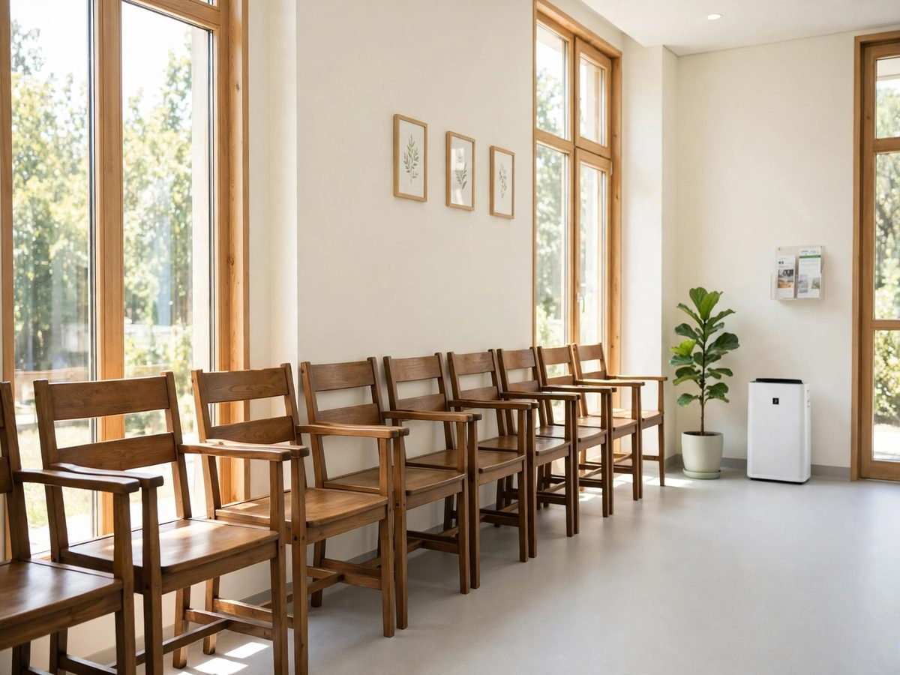

Internal Medicine & Cardiovascular — Shibata Clinic
苫小牧市桜木町の内科・循環器科クリニック。内科一般の診療に加え、内視鏡・超音波検査、糖尿病の療養指導を行っています。
About
柴田内科循環器科は、苫小牧市桜木町にある内科・循環器科のクリニックです。理事長 柴田真吾のもと、風邪や腹痛といった内科一般から、循環器疾患の診療まで対応しています。
内視鏡検査や各種超音波検査にも対応し、糖尿病の療養指導では専門スタッフが患者さまの日々の生活をサポートしています。

Medical Services
Internal Medicine
風邪・発熱・腹痛・頭痛など、日常的な内科疾患の診療を行っています。まずはお気軽にご相談ください。
Cardiovascular
高血圧・不整脈・動脈硬化など、心臓や血管に関わる疾患の診療を行っています。
Examination
内視鏡検査・各種超音波検査に対応。体の状態を把握し、的確な診療につなげます。
Community Health
当院は、苫小牧市の糖尿病コーディネーターとして、糖尿病の療養指導に力を入れています。集団教室や個人指導を通じて、患者さまの生活習慣の改善をサポートします。
また、苫小牧市の帯状疱疹ワクチン実施医療機関、特定健診（タダとく健診）実施機関にも指定されています。
Diabetes
糖尿病療養指導士を中心に、集団教室・個人指導を実施
Vaccine
苫小牧市の実施医療機関として対応
Checkup
苫小牧市のタダとく健診の実施機関です
Information
Contact
ご予約・お問い合わせはお電話で
0144-71-2225
診療時間・休診日はお電話にてご確認ください。